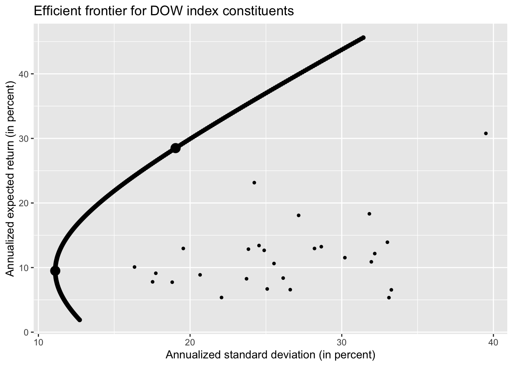

library(tidyverse)
library(tidyquant)1 Introduction to Tidy Finance
prices <- tq_get("AAPL",
get = "stock.prices",
from = "2000-01-01",
to = "2021-12-31"
)
prices# A tibble: 5,535 × 8
symbol date open high low close volume adjusted
<chr> <date> <dbl> <dbl> <dbl> <dbl> <dbl> <dbl>
1 AAPL 2000-01-03 0.936 1.00 0.908 0.999 535796800 0.849
2 AAPL 2000-01-04 0.967 0.988 0.903 0.915 512377600 0.778
3 AAPL 2000-01-05 0.926 0.987 0.920 0.929 778321600 0.789
4 AAPL 2000-01-06 0.948 0.955 0.848 0.848 767972800 0.721
5 AAPL 2000-01-07 0.862 0.902 0.853 0.888 460734400 0.755
6 AAPL 2000-01-10 0.911 0.913 0.846 0.873 505064000 0.742
7 AAPL 2000-01-11 0.857 0.887 0.808 0.828 441548800 0.704
8 AAPL 2000-01-12 0.848 0.853 0.772 0.778 976068800 0.662
9 AAPL 2000-01-13 0.844 0.882 0.826 0.864 1032684800 0.734
10 AAPL 2000-01-14 0.893 0.913 0.887 0.897 390376000 0.762
# ℹ 5,525 more rowsprices |>
ggplot(aes(x = date, y = adjusted)) +
geom_line() +
labs(
x = NULL,
y = NULL,
title = "Apple stock prices between beginning of 2000 and end of 2021"
)
returns <-
prices |>
arrange(date) |>
mutate(ret = adjusted / lag(adjusted) - 1) |>
select(symbol, date, ret)
returns# A tibble: 5,535 × 3
symbol date ret
<chr> <date> <dbl>
1 AAPL 2000-01-03 NA
2 AAPL 2000-01-04 -0.0843
3 AAPL 2000-01-05 0.0146
4 AAPL 2000-01-06 -0.0865
5 AAPL 2000-01-07 0.0474
6 AAPL 2000-01-10 -0.0176
7 AAPL 2000-01-11 -0.0512
8 AAPL 2000-01-12 -0.0600
9 AAPL 2000-01-13 0.110
10 AAPL 2000-01-14 0.0381
# ℹ 5,525 more rowsreturns <-
returns |>
drop_na(ret)quantile_05 <- quantile(returns |> pull(ret) * 100, probs = 0.05)
returns |>
ggplot(aes(x = ret * 100)) +
geom_histogram(bins = 100) +
geom_vline(aes(xintercept = quantile_05),
linetype = "dashed"
) +
labs(
x = NULL,
y = NULL,
title = "Distribution of daily Apple stock returns in percent"
)returns |>
mutate(ret = ret * 100) |>
summarize(across(
ret,
list(
daily_mean = mean,
daily_sd = sd,
daily_min = min,
daily_max = max
)
))# A tibble: 1 × 4
ret_daily_mean ret_daily_sd ret_daily_min ret_daily_max
<dbl> <dbl> <dbl> <dbl>
1 0.130 2.52 -51.9 13.9returns |>
mutate(ret = ret * 100) |>
group_by(year = year(date)) |>
summarize(across(
ret,
list(
daily_mean = mean,
daily_sd = sd,
daily_min = min,
daily_max = max
),
.names = "{.fn}"
)) |>
print(n = Inf)# A tibble: 22 × 5
year daily_mean daily_sd daily_min daily_max
<dbl> <dbl> <dbl> <dbl> <dbl>
1 2000 -0.346 5.49 -51.9 13.7
2 2001 0.233 3.93 -17.2 12.9
3 2002 -0.121 3.05 -15.0 8.46
4 2003 0.186 2.34 -8.14 11.3
5 2004 0.470 2.55 -5.58 13.2
6 2005 0.349 2.45 -9.21 9.12
7 2006 0.0949 2.43 -6.33 11.8
8 2007 0.366 2.38 -7.02 10.5
9 2008 -0.265 3.67 -17.9 13.9
10 2009 0.382 2.14 -5.02 6.76
11 2010 0.183 1.69 -4.96 7.69
12 2011 0.104 1.65 -5.59 5.89
13 2012 0.130 1.86 -6.44 8.87
14 2013 0.0472 1.80 -12.4 5.14
15 2014 0.145 1.36 -7.99 8.20
16 2015 0.00199 1.68 -6.12 5.74
17 2016 0.0575 1.47 -6.57 6.50
18 2017 0.164 1.11 -3.88 6.10
19 2018 -0.00573 1.81 -6.63 7.04
20 2019 0.266 1.65 -9.96 6.83
21 2020 0.281 2.94 -12.9 12.0
22 2021 0.133 1.58 -4.17 5.391.1 Scaling Up the Analysis
ticker <- tq_index("DOW")Getting holdings for DOWticker# A tibble: 31 × 8
symbol company identifier sedol weight sector shares_held local_currency
<chr> <chr> <chr> <chr> <dbl> <chr> <dbl> <chr>
1 UNH UNITEDHEALT… 91324P102 2917… 0.0966 - 5504172 USD
2 GS GOLDMAN SAC… 38141G104 2407… 0.0634 - 5504172 USD
3 MSFT MICROSOFT C… 594918104 2588… 0.0613 - 5504172 USD
4 MCD MCDONALD S … 580135101 2550… 0.0583 - 5504172 USD
5 HD HOME DEPOT … 437076102 2434… 0.0569 - 5504172 USD
6 AMGN AMGEN INC 031162100 2023… 0.0459 - 5504172 USD
7 V VISA INC CL… 92826C839 B2PZ… 0.0457 - 5504172 USD
8 CAT CATERPILLAR… 149123101 2180… 0.0415 - 5504172 USD
9 CRM SALESFORCE … 79466L302 2310… 0.0402 - 5504172 USD
10 BA BOEING CO/T… 097023105 2108… 0.0399 - 5504172 USD
# ℹ 21 more rowsindex_prices <-
tq_get(ticker,
get = "stock.prices",
from = "2000-01-01",
to = "2022-12-31")Warning: There was 1 warning in `dplyr::mutate()`.
ℹ In argument: `data.. = purrr::map(...)`.
Caused by warning:
! x = '-', get = 'stock.prices': Error in getSymbols.yahoo(Symbols = "-", env = <environment>, verbose = FALSE, : Unable to import "-".
HTTP error 404.
Removing -.index_prices |>
filter(date <= "2022-09-30") |>
ggplot(aes(
x = date,
y = adjusted,
color = symbol
)) +
geom_line() +
labs(
x = NULL,
y = NULL,
color = NULL,
title = "Stock prices of DOW index constituents"
) +
theme(legend.position = "none")all_returns <-
index_prices |>
group_by(symbol) |>
mutate(ret = adjusted / lag(adjusted) - 1) |>
select(symbol, date, ret) |>
drop_na(ret)
all_returns |>
mutate(ret = ret * 100) |>
group_by(symbol) |>
summarize(across(
ret,
list(
daily_mean = mean,
daily_sd = sd,
daily_min = min,
daily_max = max
),
.names = "{.fn}"
)) |>
print(n = Inf)# A tibble: 30 × 5
symbol daily_mean daily_sd daily_min daily_max
<chr> <dbl> <dbl> <dbl> <dbl>
1 AAPL 0.120 2.51 -51.9 13.9
2 AMGN 0.0489 1.97 -13.4 15.1
3 AXP 0.0518 2.29 -17.6 21.9
4 BA 0.0595 2.24 -23.8 24.3
5 CAT 0.0709 2.04 -14.5 14.7
6 CRM 0.110 2.70 -27.1 26.0
7 CSCO 0.0317 2.37 -16.2 24.4
8 CVX 0.0553 1.76 -22.1 22.7
9 DIS 0.0418 1.95 -18.4 16.0
10 DOW 0.0562 2.60 -21.7 20.9
11 GS 0.0550 2.31 -19.0 26.5
12 HD 0.0543 1.94 -28.7 14.1
13 HON 0.0515 1.94 -17.4 28.2
14 IBM 0.0273 1.65 -15.5 12.0
15 INTC 0.0285 2.36 -22.0 20.1
16 JNJ 0.0408 1.22 -15.8 12.2
17 JPM 0.0582 2.42 -20.7 25.1
18 KO 0.0337 1.32 -10.1 13.9
19 MCD 0.0533 1.47 -15.9 18.1
20 MMM 0.0378 1.50 -12.9 12.6
21 MRK 0.0383 1.68 -26.8 13.0
22 MSFT 0.0513 1.94 -15.6 19.6
23 NKE 0.0743 1.94 -19.8 15.5
24 PG 0.0377 1.34 -30.2 12.0
25 TRV 0.0569 1.83 -20.8 25.6
26 UNH 0.0984 1.98 -18.6 34.8
27 V 0.0929 1.90 -13.6 15.0
28 VZ 0.0239 1.51 -11.8 14.6
29 WBA 0.0284 1.82 -15.0 16.6
30 WMT 0.0314 1.50 -11.4 11.71.2 Other Forms of Data Aggregation
volume <-
index_prices |>
group_by(date) |>
summarize(volume = sum(volume * close / 1e9))
volume |>
ggplot(aes(x = date, y = volume)) +
geom_line() +
labs(
x = NULL, y = NULL,
title = "Aggregate daily trading volume of DOW index constitutens"
)
volume |>
ggplot(aes(x = lag(volume), y = volume)) +
geom_point() +
geom_abline(aes(intercept = 0, slope = 1),
linetype = "dashed"
) +
labs(
x = "Previous day aggregate trading volume",
y = "Aggregate trading volume",
title = "Persistence in daily trading volume of DOW index constituents"
)Warning: Removed 1 rows containing missing values (`geom_point()`).
index_prices <-
index_prices |>
group_by(symbol) |>
mutate(n = n()) |>
ungroup() |>
filter(n == max(n)) |>
select(-n)1.3 Portfolio Choice Problems
returns <-
index_prices |>
mutate(month = floor_date(date, "month")) |>
group_by(symbol, month) |>
summarize(price = last(adjusted), .groups = "drop_last") |>
mutate(ret = price / lag(price) - 1) |>
drop_na(ret) |>
select(-price)
returns_matrix <-
returns |>
pivot_wider(
names_from = symbol,
values_from = ret
) |>
select(-month)
Sigma <- cov(returns_matrix)
mu <- colMeans(returns_matrix)
N <- ncol(returns_matrix)
iota <- rep(1, N)
mvp_weights <- solve(Sigma) %*% iota
mvp_weights <- mvp_weights / sum(mvp_weights)
tibble(
average_ret = as.numeric(t(mvp_weights) %*% mu),
volatility = as.numeric(sqrt(t(mvp_weights) %*% Sigma %*% mvp_weights))
)# A tibble: 1 × 2
average_ret volatility
<dbl> <dbl>
1 0.00792 0.0321mu_bar <- 3 * t(mvp_weights) %*% mu
C <- as.numeric(t(iota) %*% solve(Sigma) %*% iota)
D <- as.numeric(t(iota) %*% solve(Sigma) %*% mu)
E <- as.numeric(t(mu) %*% solve(Sigma) %*% mu)
lambda_tilde <- as.numeric(2 * (mu_bar - D / C) / (E - D^2 / C))
efp_weights <- mvp_weights +
lambda_tilde / 2 * (solve(Sigma) %*% mu - D * mvp_weights)1.4 The Efficient Frontier
c <- seq(from = -0.4, to = 1.9, by = 0.01)
res <- tibble(
c = c,
mu = NA,
sd = NA
)
for (i in seq_along(c)) {
w <- (1 - c[i]) * mvp_weights + (c[i]) * efp_weights
res$mu[i] <- 12 * 100 * t(w) %*% mu
res$sd[i] <- 100 * sqrt(12) * sqrt(t(w) %*% Sigma %*% w)
}
get_res <- function(c) {
w <- (1 - c) * mvp_weights + (c) * efp_weights
mu_star <- 12 * 100 * t(w) %*% mu
sd_star <- 100 * sqrt(12) * sqrt(t(w) %*% Sigma %*% w)
data.frame(c = c, mu = mu_star, sd = sd_star)
}
system.time({
res <- bind_rows(lapply(c, get_res))
}) user system elapsed
0.017 0.001 0.017 res |>
ggplot(aes(x = sd, y = mu)) +
geom_point() +
geom_point(
data = res |> filter(c %in% c(0, 1)),
size = 4
) +
geom_point(
data = tibble(
mu = 12 * 100 * mu,
sd = 100 * sqrt(12) * sqrt(diag(Sigma))
),
aes(y = mu, x = sd), size = 1
) +
labs(
x = "Annualized standard deviation (in percent)",
y = "Annualized expected return (in percent)",
title = "Efficient frontier for DOW index constituents"
)